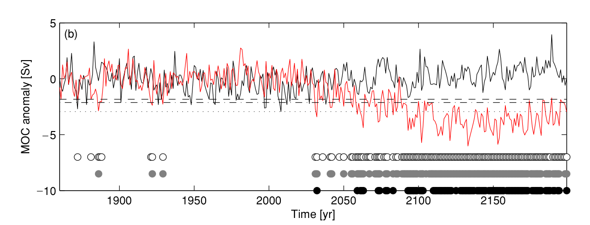

The Atlantic Meridional Overturning Circulation: detecting slowdown due to climate change
Emma Worthington
(thermo = temperature; haline = salinity)
(AMOC)

Heat lost to atmosphere
Carbon moved to deep ocean
Climate simulations show that the AMOC is very likely to slow down by the end of this century
(Intergovernmental Panel on Climate Change (IPCC), 5th Annual Report)
So what?
Sea level

Rises 25 m instantly
Air temperature

Northern Hemisphere freezes over in days
Sea level

Observed sea level along NE USA coast compared to AMOC strength
(Goddard et al., 2015)
Air temperature

Climate model shows NH air temperatures cool by up to 8°C
(Jackson et al., 2009)

(from www.rapid.ac.uk)
Instruments on the moorings measure temperature, salinity, pressure and current velocity, twice a day
(Smeed et al., 2018)
- 2004 - 2008: 18.8 Sv
- 2008 - 2012: 15.9 Sv
- 2012 - 2107: 16.3 Sv
Reduced LNADW
(3000 to 5000 m)
2008 – 2017 is 30% less than 2004 - 2008
Detecting long-term change in the AMOC
(Baehr et al., 2008)
Using the AMOC time series alone means a change takes 40-60 years to detect
Reduce variability by combining AMOC with a less noisy climate signal
e.g., cross-Atlantic density difference
(Baehr et al., 2007)
Using deep density differences reduces the detection time to around 30 years.